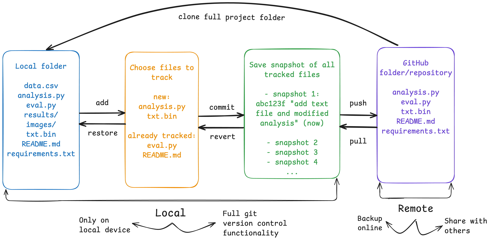
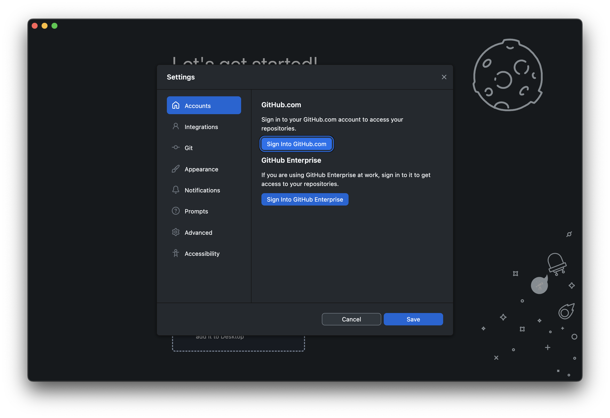
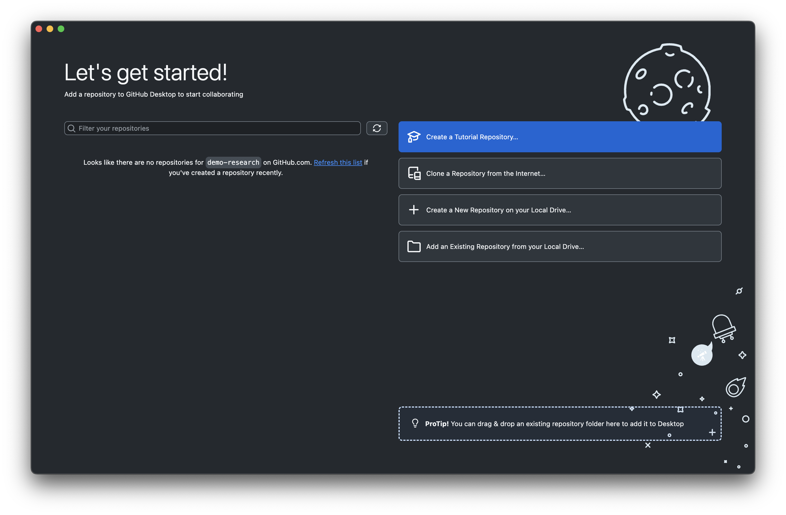
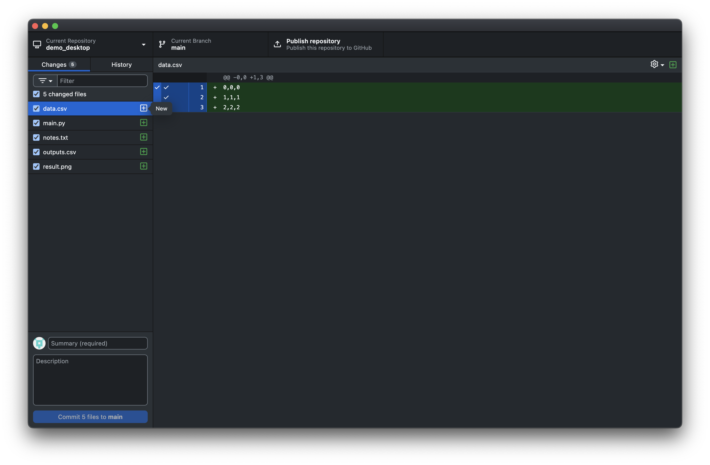

Before we start: If you’ve ever accidentally deleted important files, struggled to share your analysis with others or made one too many final (final_FINAL) versions of a file, this guide is for you.
Git might seem intimidating at first, but it’s designed to make your life easier and safer and the majority of people will use only 5 Git commands for all their needs. We’ll walk through this together, step by step, and by the end you’ll wonder why you waited so long to start using it!
1. What and why?
What is Git and GitHub?
Git is a version control software that allows you to go back in time to previous points in a project’s history. Much like track changes in Microsoft Word or saving progress in a video game, it allows you to decide when and what you want to save from a project.
If you make changes such as modifying existing files, adding new files or deleting unwanted files, Git allows you to save a snapshot of the entire project at that point in time. You can jump back to any snapshot, see exactly what changed inbetween, and never lose work again. It’s like having infinite “undo” for your entire project, plus the ability to work on different ideas simultaneously in the knowledge that any previous functionality can always be recovered.
While Git is the tool that tracks changes locally on your computer, GitHub is a website where you can share and backup your Git projects.

Why should researchers care?
Citations and career benefits:
Open research gets cited more than closed research [Colavizza, 2024]
Your GitHub profile showcases your technical skills to potential collaborators and employers
Funding agencies increasingly require open access to research code and data
Collaboration made simple:
Multiple researchers can work on the same project without emailing files back and forth
Colleagues can easily build on your work, leading to new collaborations
You can contribute to other researchers’ projects, expanding your network
Industry standard:
Used by over 90% of software developers and increasingly by researchers across all disciplines
Learning Git makes you fluent in the language of modern collaborative work
Essential skill for reproducible research and open science initiatives
Peace of mind:
Never lose work due to computer crashes or accidental deletions
Always know exactly what changed, when, and why
Easy backup and synchronisation across multiple computers
Common fears (and why they’re wrong)
“It’s too complicated” -> We’ll start with the simplest possible workflow and build gradually.
“I’m not technical enough” -> Many successful researchers use Git with just 5 basic commands. You don’t need to learn everything.
“I’ll break something important” -> Git is designed to prevent data loss. Every change is tracked and reversible.
“I don’t have time to learn this” -> The time invested now will save dozens of hours later
“My field doesn’t use Git” > Perfect! Be the one who brings modern tools to your discipline.
Different types of workflows we’ll cover
Personal version control: Track your own work safely, never lose progress, and maintain clean project history.
Sharing research publicly: Make your work discoverable, citable, and professional-looking on GitHub.
Basic collaboration: Download and use others’ code, and understand the foundations of collaborative workflows.
At the end of the guide there will be links to further git and github resources
2. Initial setup
This section covers:
- Creating a GitHub account
- Choose between command line and GUI tools
- How to configure Git
- The basic Git workflow
Before we start: You’ll need a computer with internet access and about 10 minutes for account creation and software installation.
2.1 Creating your GitHub account
GitHub is where you’ll store and share your work. It’s free for public research projects (which is what we want anyway)! We’ll set up an account now and come back to actually using GitHub a little later on.
Visit github.com and click “Sign up”
Choose a username
- Good: john-smith, john-smith-projects, research-john-smith
- Avoid: coolcat58, slowsloth4, codechampion
Enter your email (use an institutional email if possible, some universities provide extra features)
Choose the free plan (it includes everything we need!)
Verify your email address
2.2 Choosing Your Tools
You can use Git however you feel comfortable and don’t need to stick to just one approach:
GitHub Desktop (Recommended for beginners): Point-and-click interface with a visual view of functions and colour-coded. No command line needed.
Command Line: Five essential commands handle 90% of workflows. Works everywhere and preferred by many experienced users.
Git also integrates with most IDE’s such as VScode where editing and version control are combined in one place!
This guide will cover both GitHub Desktop and the Command Line Interface (CLI) but feel free to use your preferred tool - Git behaves the same.
2.3 Setting Up Git
Before Git can track your work, it needs to know who you are. This allows you to make changes on different devices and attributes your work to you.
- Download GitHub Desktop from desktop.github.com
- Install and open the application
- Sign in to GitHub.com using your credentials for GitHub.com
The app handles most configuration automatically!

First, check if Git is already installed:
$ git --version
git version 2.39.0 # (or similar - any version 2.x+ is fine)If Git isn’t installed or if you want the most up to date version:
- Mac: Install Command Line Tools with latest Git: xcode-select --install
- Windows: Download from git-scm.com
- Linux: sudo apt install git (Ubuntu) or equivalent for your distribution
Configure your identity:
$ git config --global user.name "Your name"
$ git config --global user.email "your.email@address"
# Verify the configuration
$ git config --list
user.name= Your name
user.email= your.email@addressIf you’re new to the command line, here are some useful commands for navigating your folder structure:
$ pwd # "Print working directory" - where am I? This will show the path to the current folder$ ls # List the files/folders in the current folder$ cd folder_name # Change directory (moves into specified folder)$ cd .. # Move up one level (to parent folder)$ cd ~ # Go to the home folder - this is normally the first folder on all pathsIt may feel unfamiliar using these commands at first but you’ll get used to them in no time and they are super useful for quick navigation!
What we’ve covered: You’ve created a GitHub account, configured Git with your identity, and chosen your preferred tools. Git now knows who you are and you can begin tracking your files.
If something went wrong:
“Git command not found”: Git isn’t installed. Follow the installation steps for your operating system.
“Can’t sign into GitHub Desktop”: Check your internet connection and GitHub credentials.
“Unexpected terminal output”: Check the commands are exactly correct (try copy-pasting them in).
2.4 The Basic Git Workflow
This four step pattern goes from modifying files to sharing the progress online:
Check what’s changed - See what files have been modified
Choose what to save - Select which changes to track
Create a snapshot - Make a record of the current tracked files
Share your progress - Upload to GitHub for backup and sharing
This becomes as natural as saving a document - but much more powerful.
In this guide, we will follow an example research project:
|── demo_CLI
│ ├── data.csv (some input data to share)
│ ├── main.py (our main analysis code to share)
│ ├── notes.txt (random notes to not share)
│ ├── outputs.csv (some output data to not share)
│ └── result.png (results figure to share)
3. Your First Repository
What you’ll learn:
How to create a Git repository
Understand what Git sees in your project folder
Before we start: Either use an existing project you’d like to start tracking (any folder with some files also works) or create a new folder but remember to add some files for later steps.
Creating Your Repository
If starting from a new project folder:
Open GitHub Desktop
Click “Create a New Repository on your Local Drive”
Fill in the details:
Name: folder_name
Description: Enter or leave blank - can edit this later
Local path: Choose where you want the project folder
Initialise with README: (can leave this checked or can create this later )
Git ignore: None (we’ll create this later)
License: None (we’ll add this later)
Click “Create Repository”
GitHub Desktop creates the folder and sets up Git automatically!
If you have an existing project folder to start tracking:
Launch a terminal window,
$ cd demo_desktop # Go to folder
$ git init # Initialises the Git repository
Initialized empty Git repository in user/demo_desktop/.git/Now in GitHub Desktop,
- Click “Add an Existing Repository from your Local Drive…”
- Select the folder where git is initialised

In a terminal, navigate to your project folder (or create a new one):
$ cd demo_desktop # Go to folder
$ git init # Initialises the Git repository
Initialized empty Git repository in user/demo_desktop/.git/
$ ls -a # Example project files
. .git main.py outputs.csv
.. data.csv notes.txt result.pngBy initialising Git, a new hidden .git directory is created where all of the Git tracking and functionality is stored. Deleting this .git directory will remove all git functionality from the folder.
Understanding Git’s View of Your Files
- Look at the “Changes” tab - you’ll see a list of all modified files - this will be empty if created a new repository
- Each file shows its status:
- Green “+” means new file
- Yellow “M” means modified file
- Red “-” means deleted file
- Notice the file count - “X changed files” tells you how much has changed

At this point, Git sees your files and GitHub Desktop is set up to start tracking everything automatically. We can also view the contents of files and any changes.
Running git status shows us what Git is seeing in the folder.
$ git status
On branch main
No commits yet
Untracked files:
(use "git add <file>..." to include in what will be committed)
analysis.py
data.csv
notes.txt
results.png
outputs.csv
.DS_Store
nothing added to commit but untracked files present (use "git add" to track)Understanding this output:
On branch main-> The default branch (can be a diffent name like ‘master’ depending on the Git configuration)No commits yet-> No snapshots have been createdUntracked files-> Git sees these files but isn’t managing them yet, the hint tells us there are untracked files present
What just happened? You’ve created a Git repository! Git is now watching your project folder and can see all your files. You can see the status of each file and whether Git is actively tracking that file.
Success check:
GitHub Desktop users: You see your project with files listed under “Changes”
Command line users:
git statusruns without errors and shows your files as “untracked”Your project folder now contains a hidden
.gitdirectory (you may need to show hidden files withls -ato see it)
If something went wrong:
“Not a git repository”: Make sure you’re in the right folder and ran
git init“No files showing in GitHub Desktop”: Check that you’ve selected the correct repository and there are files in the folder
“Permission denied”: Make sure you have write access to the folder you’re trying to use
4. Staging Files: Choosing what to track and save
Understanding the Staging Area
Git doesn’t automatically save every change you make, instead, it gives you control over exactly what gets saved and when. This happens through Git’s “staging area”, which acts like a preparation zone where you tell Git which file changes to track for a snapshot.
Think of it like packing for a trip. You don’t throw everything from your closet into a suitcase - you carefully select what you need for this journey. Similarly, staging lets you choose which file changes to include in each commit.
Why does this matter?
Imagine you’re working on your analysis and you’ve:
Fixed a bug in your main script
Updated your research notes
Created some temporary test files
Modified your data processing code
Rather than saving all these changes as one messy snapshot, staging lets you create two focused commits: one for the bug fix and data processing (the code changes), and another for the updated notes. The temporary files stay unstaged and don’t clutter your project history.
Staging Files in Practice
GitHub Desktop makes staging visual and intuitive. When you open the app after making changes to your files, you’ll see them listed in the “Changes” tab.
Key insight: GitHub Desktop stages all changed files by default - they appear with checked boxes. To exclude files from your next commit, simply uncheck them.
Show Image
In this example, you can see:
analysis.pyhas been modified (yellow “M” icon)notes.mdis a new file (green “+” icon).DS_Storeis a system file we don’t want to commit
To control what gets staged:
Keep checked - files you want in your next snapshot
Uncheck - files you want to exclude (like system files or work-in-progress changes)
Click on any file - to see exactly what changed in that file
The beauty of this approach is that you can see your changes and decide what belongs together before creating your snapshot.
Staging commands:
$ git add file_name # Stage a specified file/folder
$ git add -u # Stage all modified files (but not untracked files)
$ git add . # Stage everything, including new files (be careful!)
$ git restore --staged file_name # If you accidentally add a file, unstages files
$ git rm --cached file_name # Only use if no commits made in this repositoryLet’s look at an example where we choose some files to track and others to not track. Then we will modify a tracked file and see what Git thinks about our current changes:
Staging commands in practice. You can pause the video and copy/paste any commands directly from the terminal.
Checking git status as we go tells us several important things:
“Untracked files”: Git sees all the files in the repository but is not tracking any yet
“Changes to be committed” - Git notices
main.pyanddata.csvhave been added and are ready to commit“Changes not staged for commit” - Git has been tracking
data.csvas it was added and notices there are changes in the file but these have not been staged. Saving a snapshot (commit) now would only save the previous unmodified version of the file. If an untracked file is modified, Git will not notice any changes.
Now main.py and data.csv are staged (ready to be saved), while our temporary files remain unstaged.
The staging area is Git’s way of letting you craft deliberate, meaningful snapshots rather than chaotic “save everything” moments. Once you get comfortable with this concept, you’ll find it becomes second nature and your project history will tell a much clearer story of your research progress.
Next, we’ll learn how to turn these staged changes into permanent commits that become part of your project’s history.
5. Creating Commits: Saving changes
A commit is Git’s way of taking a permanent snapshot of your project at a specific moment in time. Think of it as creating a bookmark in your project’s story - a point you can always return to, no matter what happens later.
When you create a commit, Git doesn’t just save the files you’ve staged. It creates a complete record that includes:
- The exact state of all your staged files
- A unique identifier (like a fingerprint) for this specific snapshot
- Your name and timestamp showing who made the change and when
- A message describing what this snapshot represents
This is fundamentally different from just saving a file. When you save a document, you overwrite the previous version. When you commit in Git, you add a new entry to your project’s permanent history while keeping all previous versions intact.
Creating a Commit
The commit interface in GitHub Desktop keeps everything visual and straightforward:
- Review your staged files - confirm the checked files are what you want to commit
- Write your commit message in the “Summary” field at the bottom
- Good: “Add initial analysis script and sample data”
- Avoid: “stuff” or “updates”
- Add details if helpful in the “Description” field (optional)
- Click “Commit to main”

Once you commit, the staged files disappear from the Changes tab - they’re now part of your project’s permanent history. Any unstaged files remain in the Changes tab, ready for your next commit.
Creating a commit from the command line is straightforward once your files are staged:
# Create a commit with a message
$ git commit -m "Add initial analysis script and sample data"
[main (root-commit) f7fde3a] Add initial analysis script and sample data
4 files changed, 8 insertions(+)
create mode 100644 analysis.py
create mode 100644 data.csv
create mode 100644 notes.md
create mode 100644 results.txt
# Check the result
$ git status
On branch main
Untracked files:
(use "git add <file>..." to include in what will be committed)
.DS_Store
nothing added to commit but untracked files present
Understanding the commit output:
[main (root-commit) f7fde3a] - This is your first commit on the main branch
4 files changed, 8 insertions(+) The previously staged files no longer appear under “Changes to be committed”
Get in the habit of running git status (or checking the Changes tab in GitHub Desktop) before and after every Git command. It keeps you aware of what’s happening and prevents surprises.
The Commit message is your opportunity to explain what this snapshot represents and why it matters. Later on, when you’re trying to understand your project’s evolution, these messages become invaluable breadcrumbs.
Effective commit messages follow a simple pattern:
Start with an action verb - “Add”, “Fix”, “Update”, “Remove”, “Refactor”
Be specific about what changed - not just that something changed
Keep the first line concise - aim for 50 characters or less
Focus on the “what” and “why” - the code shows the “how”
Examples that tell a story:
- “Add correlation analysis for housing price data”
- “Fix missing value handling in data cleaning step”
- “Update visualisation colours for accessibility”
- Not just “Changes” or “Update stuff” or “Fixed it”
The difference is clear: good messages help you understand your project’s progression, while vague messages leave you guessing.
Check your staged files - Use git status or review GitHub Desktop’s Changes tab. Are you committing exactly what you intend?
Avoid large files - Git works best with text files and small binaries. Large datasets or high-resolution images can bloat your repository. Consider if these files belong in Git or should be stored elsewhere.
Review your changes (optional) - Click on files in GitHub Desktop or use git diff --staged to see exactly what changes you’re about to commit. Catching mistakes now is easier than fixing them later.
Your Project’s Story: Viewing Commit History
Now that you’ve created your first commit, you’ve started writing your project’s permanent story. Each commit becomes a chapter that documents not just what changed, but when and why it changed.
This history is more than just a record - it’s a powerful tool that lets you understand how your research evolved, track down when specific changes were made, and see the logical progression of your work.
Click the “History” tab to see your project’s timeline:

Each entry shows: - The commit message - your description of what this snapshot represents - When it was created - timestamp showing your project’s progression - Your name - useful when collaborating with others - A unique identifier - like a fingerprint for this exact snapshot
Click on any commit to see exactly what files were changed and how they were modified. This allows you to review the differences in each commit to the previous.
Git provides several ways to explore your project’s evolution:
# See your commit history
$ git log --oneline
f7fde3a Add initial analysis script and sample data
a1b2c3d Initial project setup
# More detailed view
$ git log
commit f7fde3a8b2c1d5e6789012345678901234567890
Author: Jane Researcher <jane@university.edu>
Date: Wed Jan 15 14:30:22 2025 -0500
Add initial analysis script and sample data
# See what actually changed in the most recent commit
$ git show6. Connecting to GitHub: From Local to Public
Understanding GitHub’s Role
GitHub is essentially a hosting service for Git repositories - think of it as a public library where you can store and share your research projects. While Git tracks your changes locally on your computer, GitHub provides a remote location where those same Git repositories can live online.
This connection transforms your personal version control system into a collaborative platform. Your local Git repository remains the primary workspace where you make changes and create commits, but GitHub becomes the public version that others can access, reference, and build upon.
The relationship is straightforward: your local repository contains your actual work and Git history, while GitHub hosts an identical copy that stays synchronised through “pushing” (uploading) and “pulling” (downloading) changes.
Creating Your GitHub Repository
When you create a GitHub repository, you’re establishing the online counterpart to your local Git repository. This process involves creating the remote storage space and then connecting your local repository to it.
GitHub Desktop streamlines this entire process:
- Ensure your repository is selected in GitHub Desktop
- Click “Publish repository” in the toolbar
- Configure the repository settings:
- Name: Usually matches your local folder name
- Description: Brief explanation of the research
- Keep code private: Leave unchecked for public repository
- Click “Publish Repository”

GitHub Desktop creates the online repository and establishes the connection automatically. Your local commits are immediately uploaded to GitHub.
The command line approach requires two steps: creating the GitHub repository through the web interface, then connecting your local repository to it.
First, create the repository on GitHub:
Visit github.com and sign in
Click the “+” icon and select “New repository”
Configure the repository:
Repository name: Match your local folder name
Description: Brief research description
Set to Public
“Initialise with README” (Check or not, we will cover README later in more detail)
Click “Create repository”
Then connect your local repository:
# Add GitHub as a remote repository
$ git remote add origin https://github.com/yourusername/my-research-project.git
# Verify the connection
$ git remote -v
origin https://github.com/yourusername/my-research-project.git (fetch)
origin https://github.com/yourusername/my-research-project.git (push)
# Upload your commits to GitHub
$ git push -u origin main
Enumerating objects: 8, done.
Counting objects: 100% (8/8), done.
Writing objects: 100% (8/8), 1.15 KiB | 1.15 MiB/s, done.
To https://github.com/yourusername/my-research-project.git
* [new branch] main -> main
Branch 'main' set up to track remote branch 'main' from 'origin'.Understanding the Remote Connection The git remote add command establishes a connection between your local repository and GitHub, using “origin” as a convenient shortcut name for the full GitHub URL. This is Git’s way of saying “when I refer to ‘origin’, I mean this specific GitHub repository.”
The first git push -u origin main command does two important things: it uploads all your local commits to GitHub, and it sets up “tracking” so that your local main branch knows it corresponds to the main branch on GitHub. After this initial setup, future pushes require only git push.
Authentication requirement: GitHub requires personal access tokens instead of passwords for command line access. If prompted for a password during git push, you’ll need to create a personal access token in your GitHub settings.
Your Repository Goes Public Once the connection is established and your first push completes, your research becomes publicly accessible. Anyone can visit your repository URL, browse your files, and see your complete commit history.
This public visibility means your work immediately gains several practical benefits: it’s automatically backed up in the cloud, accessible from any internet-connected device, and permanently citable with its GitHub URL. Other researchers can examine your methodology, reproduce your analysis, and reference your work in their own research.
The repository URL follows a simple pattern: github.com/yourusername/repositoryname. This becomes the permanent address for your research project.
Maintaining the Connection From this point forward, your local Git workflow remains unchanged - you continue staging and committing changes as before. When you are ready, you push your commits to GitHub.
After making new commits locally, you’ll see a “Push origin” button appear. Clicking this uploads your recent commits to GitHub.
After creating new commits, use git push to upload them to GitHub:
# Check what needs to be pushed
$ git status
Your branch is ahead of 'origin/main' by 2 commits. # This means there are local changes compared to the online repository
# Push your new commits
$ git pushYour local repository remains the primary workspace, but GitHub now serves as both backup and public platform for your research. This dual setup - local for active work, remote for sharing and backup - forms the foundation of modern collaborative research workflows.
Get into the habit of pushing your commits to GitHub regularly. This ensures your public repository stays current and provides continuous backup of your work.
7. Essential Files for Public Repositories
Making Your Repository Professional
When you publish research code on GitHub, certain files transform it from a simple code dump into a professional, usable resource. These files serve as documentation that helps others understand, run, and properly credit your work.
The essential components are straightforward:
README.md that explains your project and how to use it
A .gitignore that disables tracking of chosen files or filetypes
A licence that clarifies usage rights
Dependency information that enables reproducibility.
Core Repository Files
Your README.md (this is markdown format) serves as the front page of your repository. It should quickly answer what your work does, how others can use it, and how to contact you.
Essential sections for research:
# Project Title
Brief description of your work and approach.
## Getting Started
- Prerequisites needed
- How to run the analysis
## Project Structure
Brief explanation of key files and folders
## Citation
How others should cite your work
## Contact
Your name, email, and institutionThe key is clarity and brevity: visitors should understand your project within 30 seconds of reading. For markdown formatting help and adding items like images or graphs please see this link: https://github.com/darsaveli/Readme-Markdown-Syntax
This file prevents sensitive or irrelevant files from being tracked by Git. Essential for protecting personal data and keeping repositories clean.
Common exclusions:
.gitignore.txt
System files
.DS_Store Thumbs.db
Language-specific
pycache/ # Python .Rproj.user/ # R
Sensitive data
*.key .env config.ini
Large files
*.zip data/raw/ # If datasets are large
Remember: .gitignore only affects new files. Previously tracked files need manual removal. For more detail: https://www.freecodecamp.org/news/gitignore-file-how-to-ignore-files-and-folders-in-git/
A licence clarifies how others can use your work. For most research, permissive licences work well. MIT Licence (recommended for research code):
MIT License
Copyright (c) [year] [your name]
[Standard MIT licence text]
Visit https://choosealicense.com/ for guidance on selecting appropriate licences.
Document what software others need to run your analysis. This enables reproducibility.
You could create a requirements.txt file that someone can use to install all required software at once
Include detail on the dependencies or third party software that may need to be installed and how
Include specific version numbers to ensure reproducibility - the more information the better
Adding these files to your repository
Create each file in your project folder using a text editor Return to GitHub Desktop - new files appear in the Changes tab Stage the files you want to commit (check the boxes) Write a descriptive commit message Commit and push to update your GitHub repository
# Create files in your project directory
$ touch README.md .gitignore LICENSE
# Edit files with your preferred editor
$ nano README.md
# Stage and commit new files
$ git add README.md .gitignore LICENSE
$ git commit -m "Add essential documentation files"
# Push to GitHub
$ git pushBefore pushing: Review your .gitignore file and ensure no large files or sensitive information (passwords, personal data, API keys) are tracked in your repository.
Iterative improvement: You don’t need perfect documentation immediately. Start with basic versions of these files and improve them as your project evolves.
8. Basic Collaboration: Using Others’ Work
Understanding repository sharing
Git’s distributed nature means every repository can exist in multiple places simultaneously. When researchers share their work on GitHub, they’re making their entire Git repository (including all history and commits) available for others to download and use.
This creates powerful opportunities for building on existing research. Rather than starting from scratch, you can clone (download) others’ repositories, explore their approaches, and adapt their methods to your own work.
The key insight is that cloning creates a complete, independent copy of someone else’s repository on your computer. You get their files, their entire commit history, and the ability to track updates they make over time.
Cloning: getting a complete copy
When you clone a repository, Git downloads everything: all files, all commits, all branches, and sets up a connection to the original repository for future updates.
- Find the repository on GitHub you want to clone
- Click the green “Code” button and select “Open with GitHub Desktop”
- Choose a local folder for the repository
- Click “Clone”
GitHub Desktop downloads the complete repository and establishes the connection automatically.
Alternatively, use File → Clone Repository in GitHub Desktop and paste the repository URL.
# Navigate to your preferred location
$ cd ~/Documents/research-projects
# Clone the repository
$ git clone https://github.com/researcher/interesting-project.git
Cloning into 'interesting-project'...
remote: Counting objects: 127, done.
Receiving objects: 100% (127/127), 2.85 MiB | 4.12 MiB/s, done.
# Move into the cloned repository
$ cd interesting-project
# Verify the clone worked
$ git status
On branch main
Your branch is up to date with 'origin/main'.The cloned repository is now a fully functional Git repository on your computer. You can explore the files, examine the commit history, and understand how the research was developed.
Staying current: pulling updates
Research is ongoing, and the original authors may continue updating their repository. Since your clone maintains a connection to the original, you can download these updates whenever they occur. This is different from cloning - pulling updates an existing local repository rather than creating a new one.
Select the cloned repository in GitHub Desktop Click “Fetch origin” to check for updates If updates exist, click “Pull origin” to download them
GitHub Desktop shows you exactly what changed in the update, maintaining your awareness of how the project evolves.
# Check for updates (doesn't download them yet)
$ git fetch
# See what's new
$ git log HEAD..origin/main --oneline
x9y8z7w Add new visualisation options
v6u5t4s Fix data preprocessing bug
# Download the updates
$ git pull
Updating a1b2c3d..x9y8z7w
Fast-forward
analysis.py | 15 +++++++++++++--
README.md | 3 +++
2 files changed, 16 insertions(+), 2 deletions(-)Practical Workflow for Using Others’ Research
Before cloning: Read the repository’s README and licence to understand what the project does and how you can use it.
After cloning: Install any required dependencies and run the provided examples to ensure everything works in your environment.
For ongoing use: Periodically pull updates to benefit from improvements and bug fixes the original authors make.
When building on others’ work: Always provide appropriate citation and consider reaching out to collaborate rather than working in isolation.
Respecting licences: Check the repository’s licence file to understand what you can legally do with the code. Most research repositories use permissive licences, but always verify.
Understanding Your Boundaries This basic collaboration workflow focuses on using others’ work rather than contributing back to it. You can clone any public repository, explore its contents, and pull updates as they become available.
More advanced collaboration, such as suggesting changes back to the original authors or handling conflicts when multiple people modify the same files, involves additional Git concepts we haven’t covered here. See this link for further Git actions: The Turing Way’s Guide to Version Control
The ability to easily clone and update others’ work and history transforms research from isolated efforts into a connected ecosystem where you can build upon the best available tools and methods.
9. Common Issues and Quick Fixes
Diagnosing Problems
When Git behaves unexpectedly, start with these diagnostic commands to understand what’s happening:
# Check current repository state
$ git status
# See recent commits
$ git log --oneline -5
# Check remote connections
$ git remote -v
# See what changes are staged
$ git diff --stagedThese commands reveal most issues quickly and help you understand the current state before attempting fixes.
Quick Reference for Common Issues
Problem: Committed files you didn’t intend to include Before pushing:
Command line
# Undo last commit, keep changes
$ git reset HEAD~1Re-stage only desired files, then commit again
GitHub Desktop: History tab → right-click commit → “Undo this commit” Prevention: Always use git status before committing
Problem: “File exceeds 100MB limit” when pushing to GitHub Solution:
# Remove large file from tracking
$ git rm --cached large-file.csvAdd to .gitignore
$ echo "large-file.csv" >> .gitignore
$ git commit -m "Remove large file from tracking"Check file sizes before committing:
$ find . -size +50M -type fFor ongoing large file needs: Consider Git LFS or external storage solutions https://git-lfs.com/
Problem: “Updates were rejected” or “fetch first” Solution:
Command line
# Pull remote changes first
$ git pull
# Then push your changes
$ git pushGitHub Desktop: Click “Pull origin” then “Push origin” Prevention: Push changes regularly, pull before starting work sessions
Problem: Added wrong files to staging area Solution:
# Unstage specific file
$ git restore --staged filename.py
# Unstage all files
$ git restore --staged .GitHub Desktop: Uncheck the boxes next to files in Changes tab
Problem: Committed passwords, API keys, or personal data If not yet pushed:
$ git reset HEAD~1
# Remove sensitive files, add to .gitignore, recommitIf already pushed: Stop immediately and seek expert help - this requires history rewriting
Use .gitignore from project start, review staged changes before committing
Exploring Repository History
Understanding your repository’s history helps diagnose issues and find solutions:
# See all commits with details
$ git log
# Compact view of recent commits
$ git log --oneline -10
# See what changed in a specific commit
$ git show commit-hash
# View all past actions (including "lost" commits)
$ git reflogGitHub Desktop: Use the History tab to visually explore commits and changes.
Recovery Options If you’ve lost work or made mistakes:
# Check for stashed changes
$ git stash list
# Recover stashed work
$ git stash pop
# Go back to a previous commit (temporarily)
$ git checkout commit-hash
# Return to latest: git checkout main
# See if "lost" work exists in reflog
$ git reflogAvoid destructive commands: Be cautious with commands containing –hard, –force, or that mention “destructive” in warnings. When in doubt, ask for help rather than risk losing work.
Getting Help
Modern AI assistance: AI chatbots (ChatGPT, Claude, GitHub Copilot) are excellent for Git troubleshooting. Copy your exact error message and ask for help, but always understand the suggested commands before running them.
GitHub documentation: Comprehensive official guides
Your institution’s IT support: Often have Git expertise
Git documentation locally:
git help <command>for detailed command information
Error message strategy: Git’s error messages are usually helpful. Read them carefully as they often suggest the exact commands needed to fix the problem.
Further resources for continued learning
In-depth tutorials:
The Turing Way’s Guide to Version Control : Academic perspective on reproducible research
Software Carpentry Git Lessons: Step-by-step lessons with exercises
Pro Git Book : Comprehensive Git reference (free online)
Tools and utilities:
GitHub Desktop - GUI for Git operations
GitKraken - Advanced Git GUI with visualisation
GitHub CLI - Command-line tools for GitHub integration
Downloadable cheat sheet for Git/GitHub
[DOWNLOADABLE CHEAT SHEET PLACEHOLDER: PDF reference card with common commands, flags, and troubleshooting tips]
Summary
You now have the essential skills to manage research projects with Git and share your work professionally on GitHub. This foundation - staging, committing, pushing, and basic collaboration - handles the vast majority of research version control needs.
What we’ve covered
Personal version control: You can track changes to your research, create meaningful snapshots of your progress, and recover from mistakes without losing work.
Professional sharing: Your repositories now include proper documentation, clear commit histories, and appropriate licensing that makes your work discoverable and citable.
Basic collaboration: You can find and use others’ research repositories, keep them updated, and understand the foundations of collaborative workflows.
Problem-solving confidence: You know how to diagnose common issues, apply quick fixes, and when to seek help rather than risk losing work.
Building Confidence with Git
Git is designed to prevent data loss. Almost every mistake can be undone, and your commit history provides multiple recovery points. When encountering errors:
- Read the error message carefully
- Use diagnostic commands to understand the current state
- Try the simplest solution first
- Seek help for unfamiliar or destructive-looking commands
Each problem you resolve builds your understanding and confidence with the system.
Your Contribution to Open Science
Every time you share research openly, you contribute to more transparent and collaborative science. Your repositories might help another researcher solve a critical problem, get adapted for use in a different field, or become the foundation for breakthrough discoveries.
Git and GitHub aren’t just tools; they’re part of modern research infrastructure that enables reproducible, collaborative science.
Moving Forward
Start with what you’ve learned here. As your research needs grow, you can explore advanced Git features like branching, detailed collaboration workflows, and specialised tools. The foundation you’ve built provides a solid base for any future Git learning.
Your research deserves to be shared with the world, and you now have the skills to do it professionally and confidently.